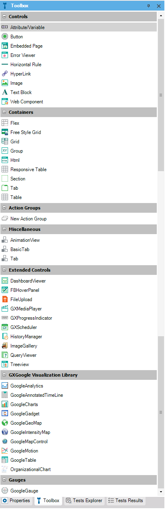

Controls offer all the necessary elements to develop not only the Web interface, but also the application itself when a visual interface has to be created. They are used to populate other GeneXus objects such as Web Panels and Transactions, thus enhancing the usability of the end-user interface. In this way, even though Web Controls such as Image or Table play different roles, they are integrated to give the Web Panel the necessary functionality.
In addition, there is another category of Controls known as User Controls. These controls, which might be developed by Artech or by Community users, can be integrated into GeneXus. Thus, there are two classes of Controls: Common Controls and User Controls.

The above picture shows the Toolbox, which is divided into two sections: the upper side is for Standard Controls and the lower side is for User Controls. When no User Controls are installed, this area is not displayed.
| Sub Categories | ||
| Category:Common Controls | Category:Common Controls (GeneXus 15 or prior) | Category:Control Properties |
| Category:What is a User Control? |